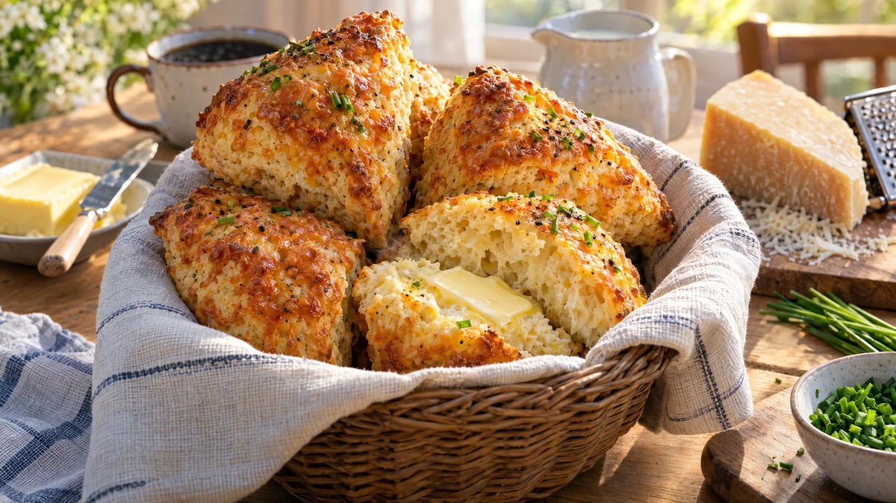

RESTFEST · RECEPTBröd · Fika & bakning · Frukost & brunch
Filmjölksscones med lagrad ost och gräslök
Filmjölken som närmar sig bäst före-datum, en bit lagrad ost och lite mjöl. Snabba scones utan jäst, som reser sig höga i ugnen med gyllene, knapriga ostkanter och en mjuk, fluffig insida. Servera dem varma med kallt smör till soppa eller helgfrukost. Från tom brödkorg till nybakat på tjugofem minuter.
- Förberedelse
- 10 min
- Tillagning
- 15 min
- Portioner
- 8 scones
- Nivå
- Nybörjare
 Det här behöver du
Det här behöver du
Tryck på + vid det du behöver köpa.
Scones
Topping
Gör så här
- Sätt ugnen på 225 grader. Klä en plåt med bakplåtspapper.
- Blanda mjöl, bakpulver, bikarbonat och salt i en bunke.
- Skär smöret i små tärningar och nyp ner det i mjölet med fingertopparna, tills det ser ut som grova smulor. Arbeta snabbt så att smöret inte hinner bli varmt. Kalla smörbitar blir till ånga i ugnen och gör sconesen luftiga.
- Rör ner osten och gräslöken. Häll i filmjölken och rör ihop till en kladdig deg med en gaffel, bara tills inget torrt mjöl syns.
- Vänd ut degen på ett mjölat bakbord och klappa ut den till en rund kaka, ca 3 cm tjock. Skär den i 8 trianglar med en vass, mjölad kniv och lägg dem på plåten med lite mellanrum.
- Pensla med filmjölk och strö över osten till toppingen, lite svartpeppar och några flingsaltkorn.
- Grädda i mitten av ugnen i 15–18 minuter, tills sconesen har rest sig och osten är gyllenbrun och krispig.
Dekoration och servering
- Servera sconesen varma i en korg med en linnehandduk, så håller de värmen.
- Dela dem på mitten och lägg i en tjock skiva kallt smör som smälter direkt.
- Gott till löksoppan i recept 57, till en sallad eller med äggröran i recept 39.
- Filmjölk som passerat bäst före-datum går ofta bra att använda. Lukta och smaka först.
- Sconesen är godast samma dag, men kan frysas och värmas i ugnen på 200 grader i 5 minuter.
Mått och ugnstemperaturer
Måtten är svenska (dl, msk, tsk, krm). Ugnstemperaturerna gäller vanlig ugn med över- och undervärme; med varmluft, sänk med 20 grader.